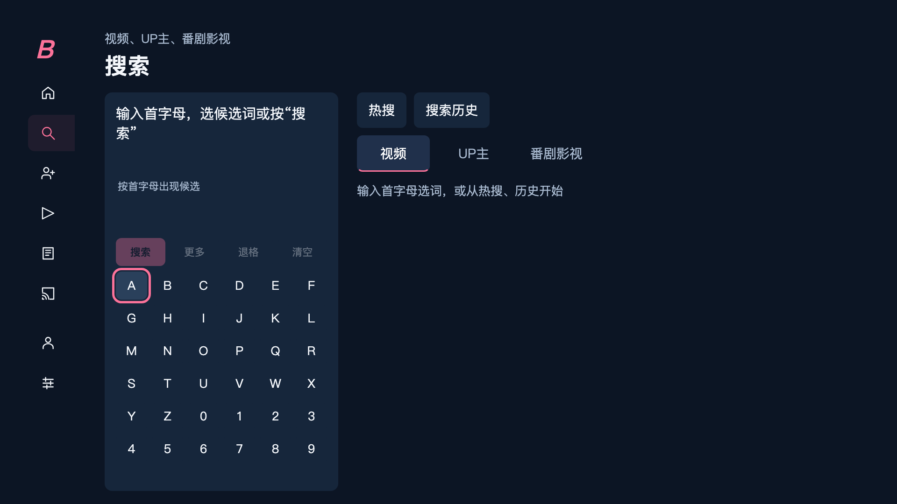
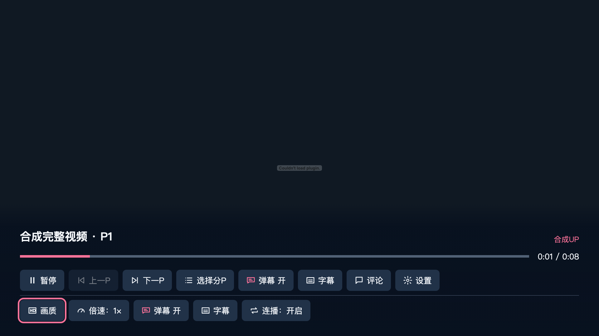
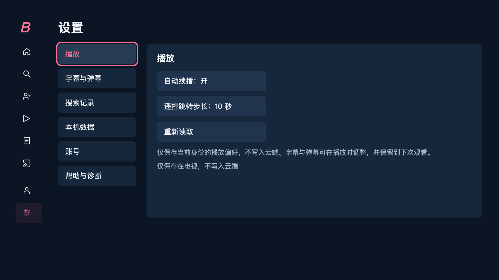

选一种方式，
开始安装。
下载无需编译。安装时需要开发者模式与有效签名。
图形安装工具由独立第三方提供；安装路径尚未在 BiliSofa 上独立实测。
电视独立运行。
安装之后，回到沙发。
日常使用的设计目标是无需常开电脑或项目云端服务。
当前版本
0.66.0 预览版，声明最低 Tizen 9.0。电视安装、升级及运行尚未验收。
首次启动
填写 www.bilibili.com，启用应用包中的本地服务配置。
安装条件
未签名 WGT 须在用户设备上使用有效 Samsung TV 证书签名。